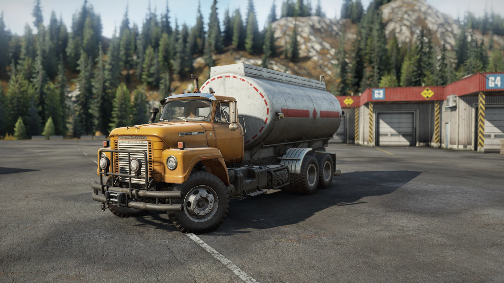
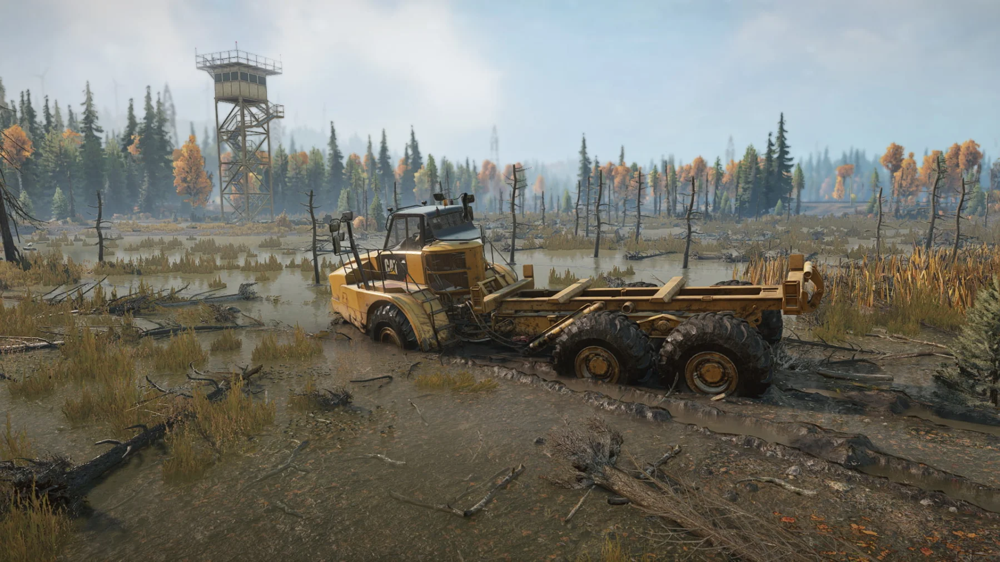
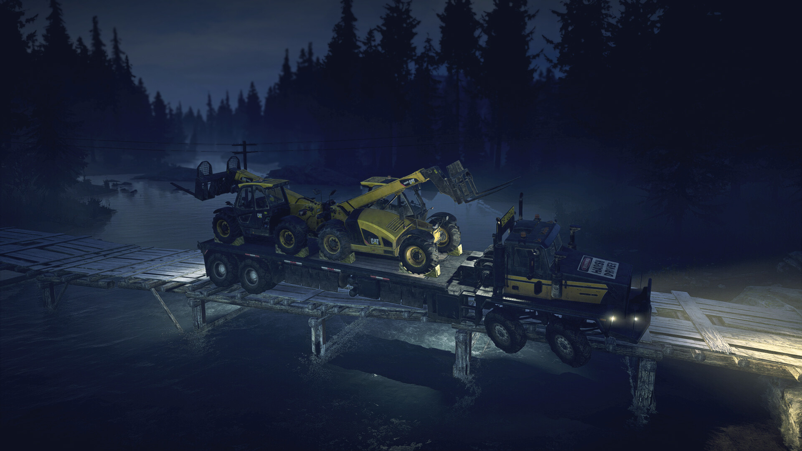
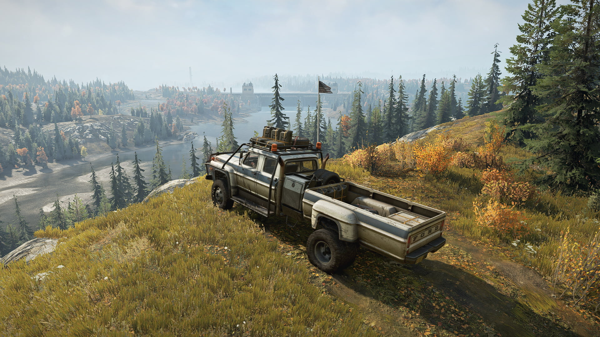
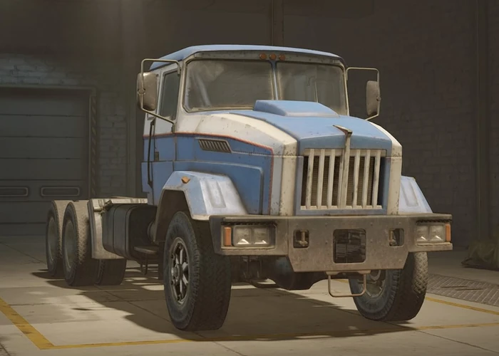
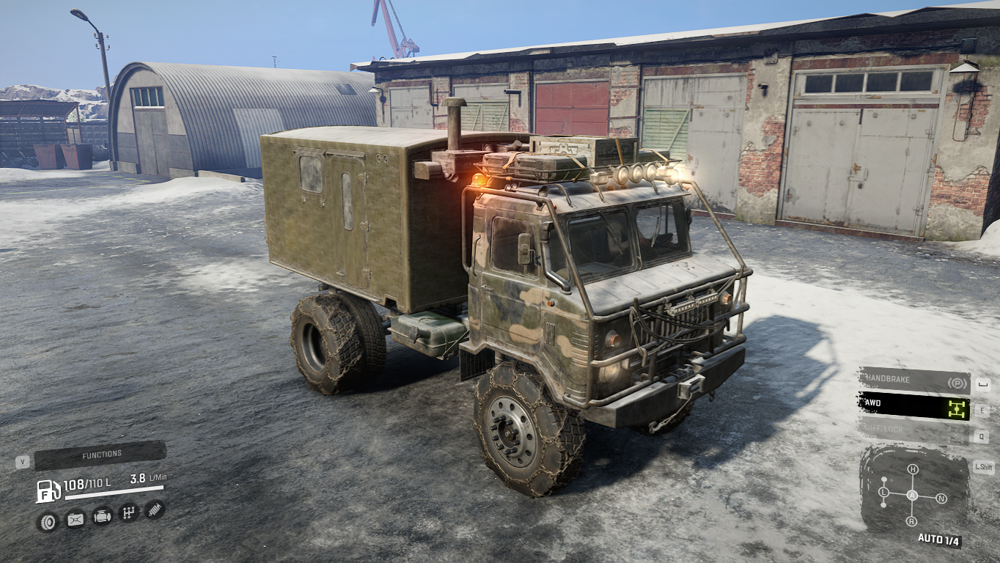
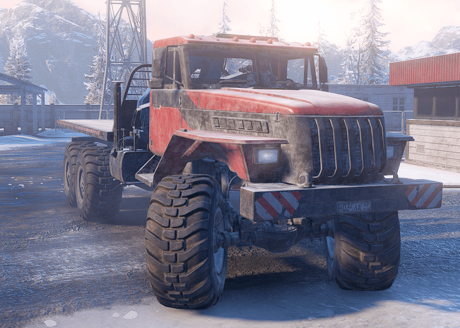

Автомобили
Fleetstar F2070A
Первая, по настоящему рабочая лошадка в вашем автопарке и, на мой взгляд, один из самых сбалансированных грузовиков игры, в принципе. Надежный и экономичный. Достаточно мощный и проходимый, чтобы справиться практически с любым грузом в игре. Для него не существует невыполнимых задач, но при этом их выполнение не будет легкой прогулкой. Его комплектация будет постепенно усиливаться, в купе с вашим прогрессом и ухудшением ландшафта, вследствие чего Fleetstar будет всегда оставаться актуальной машиной.
Полный привод, в сочетании с высокой подвеской и возможностью блокировать дифференциал, дают возможность медленно, но верно проехать практически любую грязь. А довольно высокий шноркель позволяет не бояться преодолевать реки в брод. Я исколесил на нем все американские и канадские карты, используя в самых разных модификациях и ни разу не пожалел, что выбрал на задание именно его. А еще Fleetstar потрясающе выглядит. Классический облик американского автопрома рубежа 60-70 годов прошлого века.
Caterpillar 745C
Довольно специфичная машина с крайне ограниченным спектром применения. Мобильная АЗС или контейнеровоз. Вот собственно и все. А невозможность цеплять прицепы делает его и вовсе практически изгоем. Не добавляет ему популярности и отсутствие возможности установки шноркеля. Преодоление глубоких водных препятствий не его конек. Казалось бы одни минусы, но есть у него и свои особенности.
Такая компоновка автомобиля хорошо отражается и на маневренности. Смена направления осуществляется за счет «перелома» рамы, а не поворота колес передней оси, что позволяет на ровном месте изменить угол движения до 45 градусов. Очень удобно на узких проселочных дорогах. Так сразу и не скажешь, что такая махина может быть такой юркой. Все это, в сочетании с высокой мощностью и шикарной проходимостью сделало его для меня идеальным эвакуатором. Всегда держу на карте пару штук, на всякий случай.
Western Star 6900 TwinSteer
Для облегчения коммуникации, между собой мы его называем — сосиска. Или колбаса. Багет, каланча.. вариантов много. Но, главное всегда понятно о чем идет речь. Крайне своеобразный грузовик, влюбился в который я далеко не сразу, хотя и пытался время от времени найти ему применение. Все дело, как вы догадались, в его размерах. Габариты машины могут сыграть с вами злую шутку, особенно на извилистой дороге с перепадом высот. Мало того, что колбаса имеет огромный радиус поворота, так еще и приходится постоянно крутить камеру вокруг машины, чтобы понять чем там заняты задние колеса. Немного зазевался и ты уже лежишь на боку. Опрокидывается сосиска с завидной регулярностью.
Но, эти недостатки с лихвой компенсируются плюсами. Все-таки возможность перевозить сразу 4 единицы груза, без использования прицепов, дорогого стоит. После установки полного привода и подходящих шин делать это и вовсе становится довольно комфортно. Отличные мощность и проходимость позволяют преодолевать самую густую грязь без особых проблем. А его вместительный бак и не самый высокий расход топлива дает возможность не задумываться о частой дозаправке. Ну и главное это конечно геймплей. Управлять багетом, за счет его особенностей, как минимум, просто интересно. Очень рекомендую испытать его в деле.
Ford F750
Формально Форд относится к категории скаутов, но полноценно считать его таковым, можно разве что с очень большой натяжкой. Огромные габариты, которые дадут фору многим грузовикам, делают его не самым маневренным автомобилем в игре. По сути это и есть грузовик, но тоже лишь на половину. Об этом говорит, в том числе, возможность цеплять только «взрослые» прицепы. Но, честно говоря, идея это не самая здравая. Даже в максимальной комплектации, его попытки что-то доставить на фаркопе выглядят довольно жалко. Вот и получается — не рыба, ни мясо. Что-то среднее. Для исследования местности он слишком огромный и может запросто застрять в скалах, а для перевозки груза довольно слаб.
Одним из самых частых видов поручений, встречающихся повсеместно, является необходимость ремонта, заправки и эвакуации машин местных жителей. И это именно та работа, с которой Форд справляется на отлично. Просто дайте ему шанс.
Tayga 6436
По-настоящему универсальный вездеход не только в своём классе. В серийной комплектации не особо силён, однако всё равно имеет хорошую проходимость по всем видам грунтов благодаря постоянно включённому полному приводу и заблокированному дифференциалу.
После модернизации и с учётом широкого набора модулей кузова вездеход становится пригоден практически для любых задач: эвакуация застрявших машин, перевозка крупногабаритных грузов, экспресс-доставка, геологическая разведка территории. То есть может заменить почти любой класс техники.
Обладает шинами низкого давления, после установки которых в игре не найдётся такой грязи, которую не сможет покорить Tayga.
ZiKZ 605R

Большегрузный восьмиколесный тягач. Изначально создавался в шестидесятых годах для нужд армии, однако применялся также в сельском хозяйстве и некоторых крупных объектов. Огромные колеса и мощный двигатель обеспечивают ZiKZ 605R устрашающую проходимость по практически любому ландшафту, а также способность тянуть практически любые грузы.
точки зрения проходимости 605R практически не остановить на любой местности, кроме дорог покрытых льдом, в виду отсутствия покрышек с цепями. Его массивные 61 дюймовые колеса похожи на более крупный вариант колес скаута TUZ 420 "Tatarin", и позволяют легко преодолевать даже самую глубокую грязь. По сравнению с аналогичными грузовиками размеру и назначению, такими как KOLOB 74760, ZiKZ 605R намного легче, но оснащен идентичным набором двигателей, что дает ему чудовищное соотношение мощности и массы, что еще больше улучшает его характеристики.
Набор модулей также очень велик, что позволяет ему быть: тягачом седельных прицепов, автокраном, автоцистерной, грузовиком сейсмической разведки, лесовозом, ремонтно-эвакуационным автомобилем, что делает его универсальным грузовиком. Также, можно установить модуль с 600 точками ремонта и 200 литров топлива.
TUZ 16 "Actaeon"
Да, TUZ 16 «Actaeon» — это та самая легендарная «шишига». Лёгкий бескапотный внедорожник с колесной формулой 4x4, созданный на основе армейского грузовика ГАЗ-66, производимого в Советском Союзе почти 40 лет. ГАЗ-66 славился простотой и надёжностью на бездорожье.
Actaeon лучше всего можно описать как гибрид внедорожника и скаута. Он может перевозить грузы, но при этом достаточно небольшой, чтобы выполнять роль эффективного разведчика. Для него доступны уникальные модули кузова, которых нет у других грузовиков. Но с другой стороны ограниченный набор этих модулей также ограничивает и количество груза, которое может перевозить Actaeon по сравнению с другими аналогичными машинами, такими как ZIKZ 5368. И всё же «шишига» может перевозить одну ячейку груза на своей бортовой платформе и буксировать большие прицепы.
«Шишига» является единственным грузовиком, на который можно установить автономную лебедку. Такая электрическая лебёдка до этого была доступна только скаутам и позволяла поставить на ноги перевернувшуюся машину с неработающим двигателем. Это особенно актуально для TUZ 16, так как он имеет тенденцию подпрыгивать при движении по неровной местности, так и норовя лечь на бок.
Voron AE-4380
Основан на советском/российском грузовике повышенной проходимости Урал-4320 с некоторыми существенными изменениями. В 4380, в отличие от своего реального аналога, отличается более острыми краями в конструкции решетки, фар и конструкции кабины.
Как и другие российские автомобили, 4380 может быть оснащен широкими вездеходными шинами вместо задних сдвоенных. Эти шины значительно улучшают его на бездорожье, но ограничивают сцепление с дорогой. AE-4380 оснащен топливным баком объемом 250 литров, превышающим средний, что в сочетании со средней экономией топлива позволяет ему преодолевать впечатляющие расстояния без необходимости дозаправки.